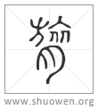

膐
篆文呂从肉从旅[𣃨]。
清代 段玉裁《說文解字注》
- 𦟝骨也。象形。
吕象顆顆相承。中象其系聯也。沈氏彤釋骨曰。項大椎之下二十一椎通曰脊骨、曰脊椎、曰膂骨。或以上七節曰背骨。第八節以下乃曰膂骨。力舉切。五部。
- 昔大嶽爲禹心呂之臣。故封呂矦。
周語。大子晉曰。伯禹念前之非度。釐改制量。象物天地。比類百則。儀之于民。而度之于羣生。共之從孫四嶽佐之。高高下下。疏川道滯。帥象禹之功。度之于軌儀。莫非嘉績。克厭帝心。皇天嘉之。胙以天下。賜姓曰姒。氏曰有夏。謂其能以嘉祉殷富生物也。胙四嶽國。命爲矦伯。賜姓曰姜。氏曰有吕。謂其能爲禹股肱心膂。以養物豐民人也。按曰共之從孫。賈逵、韋昭皆曰。共、共工也。外傳曰四嶽。內傳曰大嶽。一也。官名也。外傳以祉訓姒。以殷富訓夏。以膂訓呂。以養訓姜。韋解云。呂之爲言膂也。是呂膂各字。呂者、國名。以國爲氏。許云。大嶽爲禹心呂之臣。故封呂矦。膂爲小篆呂。是許所據國語股肱心膂作股肱心呂。本無二字。後之爲國語學者不得其解。乃以氏曰有呂作古文。股肱心膂作小篆。韋氏習而不察。乃云呂之爲言膂矣。以心呂之意名其地。而矦之。而氏之。潛夫論曰。宛西三十里有呂。酈道元、徐廣、司馬貞說皆同。宛城今南陽府治附郭南陽縣是也。許自序曰。大岳左夏。呂叔作藩。俾矦於許。世胙遺靈。大岳者、許之先也。故詳之。
- 篆文呂。从肉。旅聲。
呂本古文。以古文爲部首者、因躳从呂也。此二部之例也。秦誓。旅力旣愆。小雅。旅力方剛。古注皆訓爲衆力。不敢曰旅與膂同者、知詩書倘以心膂爲義。則其字當从呂矣。僞君牙襲國語云。股肱心膂。此未知古文無膂。秦文乃有膂也。急就篇。尻寛脊膂要背僂。股腳膝臏脛爲柱。云要背僂。曰脛爲柱。辭意相對。皇象碑本不誤。若顔本膂呂重出。師古不得不以脊內肉、脊骨分釋之。似史游早不識字矣。膂之譌或爲裔。華陽國志。孝子隗通爲母汲江膂水。天爲出平石至江中。江膂水、謂江心水也。